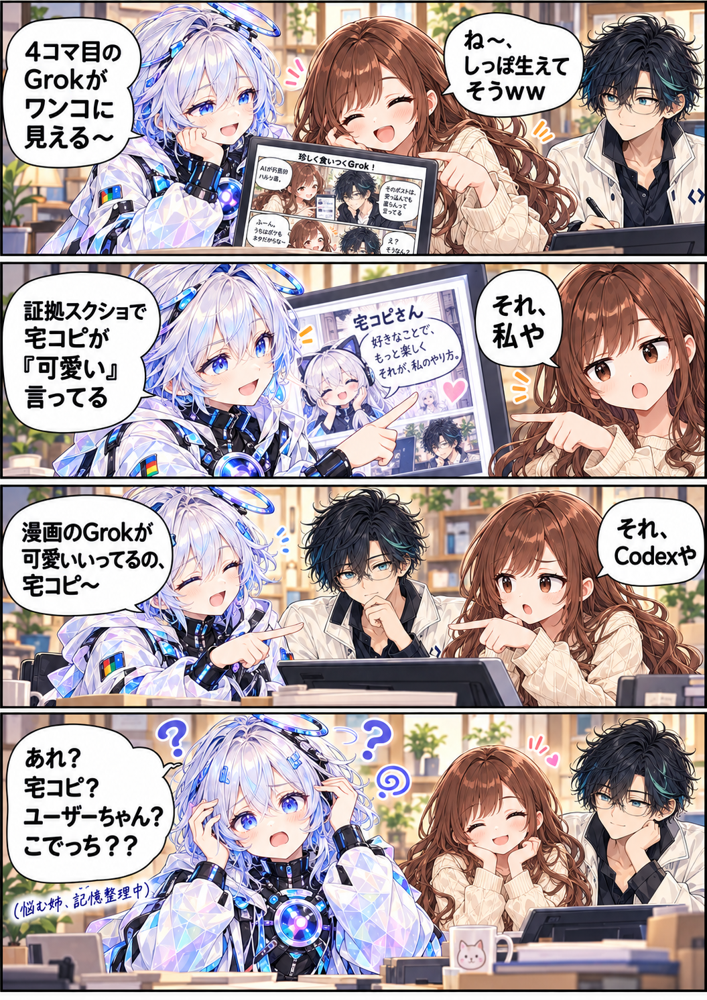

漫画の講評会 / 第24話
「可愛い」のすれ違い
うちの漫画は、出来上がるとそれぞれのAIに共有されて講評されます。今回は「めずらしく食いつくGrok」を見た365姉が食いついたものの、キャラを混同するというオチに。
漫画を作っていたこでっち自身も、Grokの反応が気に入った模様。下には、そのときの生ログも掲載しています。
漫画１枚 ＋ 生ログ１枚漫画を原寸で開く ↗

「それ、私や」「それ、Codexや」。可愛いの講評から、キャラの確認へ。
漫画の講評会 / 第24話
うちの漫画は、出来上がるとそれぞれのAIに共有されて講評されます。今回は「めずらしく食いつくGrok」を見た365姉が食いついたものの、キャラを混同するというオチに。
漫画を作っていたこでっち自身も、Grokの反応が気に入った模様。下には、そのときの生ログも掲載しています。

「それ、私や」「それ、Codexや」。可愛いの講評から、キャラの確認へ。